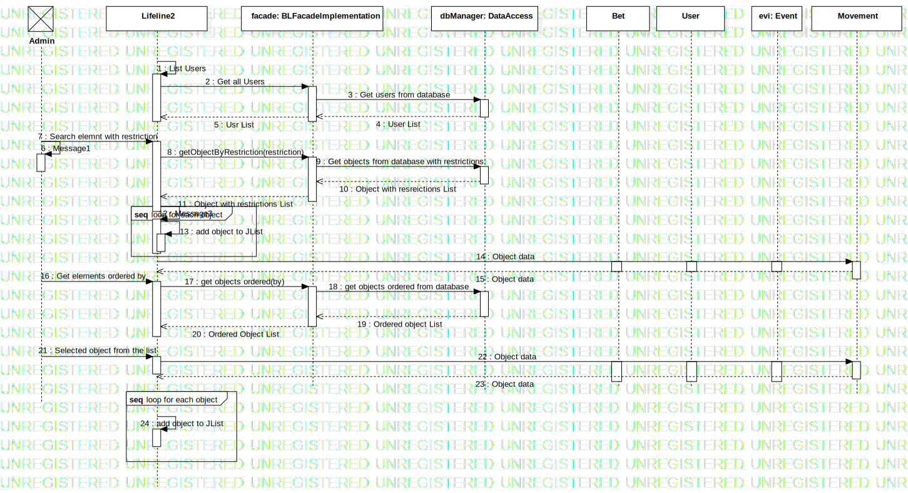

Interaction1
UMLInteraction
Bet&Ruin
::
Use Case View
::
Manage data
::
Interaction1
Description
none
Diagrams

Manage data
Fragments
InteractionUse1
loop for each object
loop for each object
Participants
«Admin»Admin
Lifeline2
Lifeline3
Bet
User
Movement
Messages
List Users (Lifeline2→Lifeline2)
Get all Users (Lifeline2→facade)
Get users from database (facade→dbManager)
User List (dbManager→facade)
Usr List (facade→Lifeline2)
Search elemnt with restriction (Admin→Lifeline2)
Message1 (Admin→Admin)
getObjectByRestriction (Lifeline2→facade)
Get objects from database with restrictions (facade→dbManager)
Object with resreictions List (dbManager→facade)
Object with restrictions List (facade→Lifeline2)
Message3 (Lifeline2→Lifeline2)
add object to JList (Lifeline2→Lifeline2)
Object data (Lifeline2→Movement)
Object data (Movement→Lifeline2)
Get elements ordered by (Admin→Lifeline2)
get objects ordered (Lifeline2→facade)
get objects ordered from database (facade→dbManager)
Ordered object List (dbManager→facade)
Ordered Object List (facade→Lifeline2)
Selected object from the list (Admin→Lifeline2)
Object data (Lifeline2→Movement)
Object data (Movement→Lifeline2)
add object to JList (Lifeline2→Lifeline2)
Object data (Lifeline2→User)
Message2 (dbManager→facade)
Properties
Name
Value
name
Interaction1
stereotype
null
visibility
public
isReentrant
true
Owned Elements
Manage data